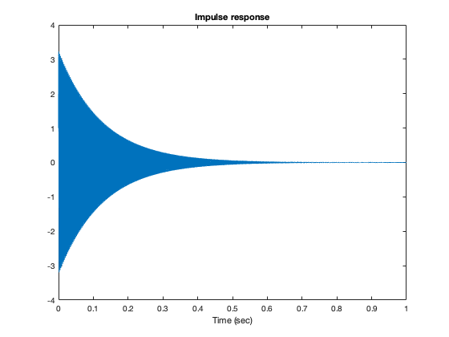
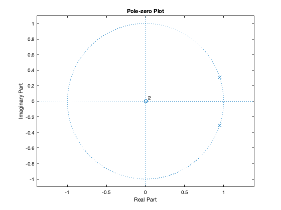
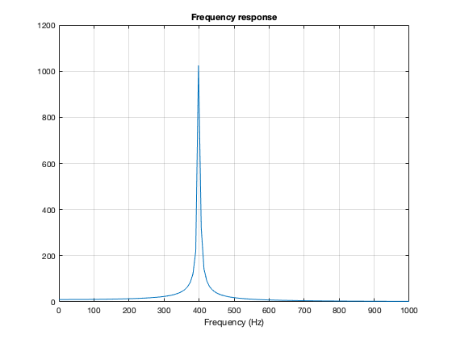
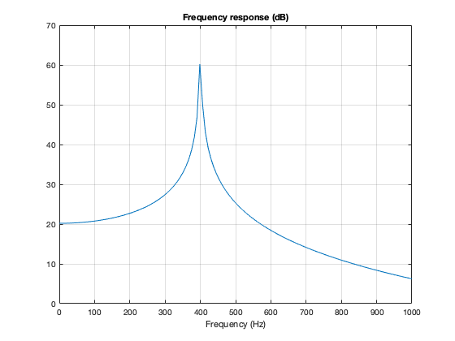

make_filter_02.m
Second-order recursive difference equation with prescribed poles.
Contents
clc clear
Difference equation
y(n) = b0 x(n) - a1 y(n-1) - a2 y(n-2)
Fs = 8000; % sampling frequency (sample/second) F1 = 400; % frequency (cycles/second) (Hz) f1 = F1/Fs % normalized frequency (cycles/sample) om1 = 2*pi * f1; % normalized frequency (radians/sample) r = 0.999 if 0 Ta = 0.1; % duration (seconds) [time till 1% amplitude] Na = Ta * Fs; r = 0.01^(1/Na) end a1 = -2*r*cos(om1); a2 = r^2; a = [1 a1 a2] % recursive part b = 1; % non-recursive part if 0 % y(n) = b0 x(n) + b1 x(n-1) - a1 y(n-1) - a2 y(n-2) b0 = 1; b1 = -r*cos(om1); b = [b0 b1] % Why? See table of Z-transforms end
f1 =
0.0500
r =
0.9990
a =
1.0000 -1.9002 0.9980
Impulse response
Note that the amplitude envelope has the form r^n.
N = Fs; n = 0:N; imp = [1 zeros(1, N)]; h = filter(b, a, imp); figure(1) clf plot(n/Fs, h) title('Impulse response'); xlabel('Time (sec)') zoom xon
Listen
soundsc(h, Fs)
Pole-zero plot
The poles are at z = r exp(om1 j) and z = r exp(-om1 j)
zplane(b, a) title('Pole-zero Plot') zoom on % The poles may look like they are on the unit circle, % but luckily they are not!
Frequency response
Note that the frequency response has a peak at f1 = 400 Hz
[H, om] = freqz(b, a); f = om / (2*pi) * Fs; plot(f, abs(H)) title('Frequency response') xlabel('Frequency (Hz)') xlim([0 1000]) grid
HdB = 20*log10(abs(H)); plot(f, HdB) title('Frequency response (dB)') xlabel('Frequency (Hz)') xlim([0 1000]) grid